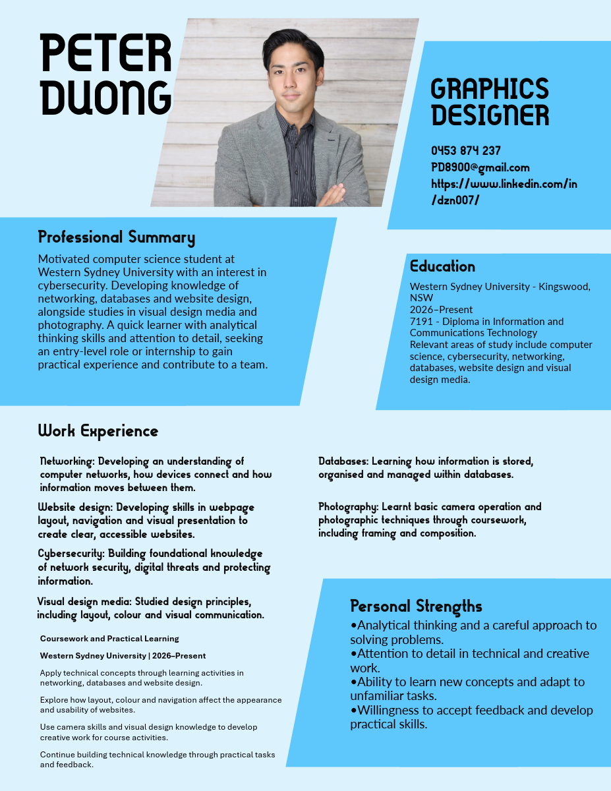

Personal résumé design
My original résumé uses blue colours and bold headings to organise my background, studies and strengths. It provided the colour direction for this website. The downloadable PDF uses updated headings to separate skills from coursework experience.